Guide de Kendle : relique de la mage de la douleur Hero Wars Alliance
- Par : Alexandre Domingos. .
Bienvenue, Champion. As-tu déjà imaginé une héroïne capable de transformer la douleur elle-même en destruction dévastatrice, brûlant son propre corps ainsi que ses alliés pour libérer des dégâts purs irrésistibles qui ignorent toute armure et toute défense magique du jeu ? Voici Kendle, la mage farouchement masochiste de la Voie du Chaos. Elle torture ses alliés et elle-même, transformant chaque goutte de santé sacrifiée en explosions de dégâts purs qu'aucun mur de statistiques ne peut arrêter. Plus elle approche de la mort, plus sa flamme devient dangereuse.
Mais Kendle est bien plus qu'une berserker solitaire. Grâce à ses Reliques Légendaires, elle obtient Vague d'Agonie, une compétence qui déclenche automatiquement des dégâts purs toutes les 10 secondes à partir de blessures qu'elle s'inflige elle-même, ainsi que Heure de la Moisson, qui amplifie les dégâts purs de toute son équipe par rafales explosives. En plus de cela, sa Purge par la Douleur légendaire étend le multiplicateur de coup critique de 200 % à tous les dégâts purs des alliés, transformant toute équipe centrée sur le Sacrifice en véritable machine de destruction. Ce guide complet te montre exactement comment maximiser le potentiel brûlant de Kendle.

▶ Regardez cette vidéo sur YouTube

📋 Guide de Kendle - Sommaire
- Qui est Kendle ?
- Avantages et inconvénients
- Stats maximales du talisman
- Guide du talisman
- Priorité d'amélioration des compétences de relique légendaire
- Meilleur skin pour Kendle
- Priorité d'évolution des artefacts
- Priorité d'évolution des glyphes
- Synergie de Kendle
- Meilleures équipes pour Kendle
- Conclusion
Qui est Kendle dans Hero Wars Alliance ?
Kendle est une héroïne intrépide de type Mage / Dégâts de la faction Voie du Chaos, placée en ligne arrière comme spécialiste des dégâts purs. Elle transforme le sacrifice personnel et la souffrance de ses alliés en arme, convertissant la perte de santé en dégâts purs croissants qui ignorent toutes les statistiques défensives du jeu. Son kit basé sur l'Intelligence récompense un style de jeu agressif à haut risque et évolue de façon exponentielle avec la bonne composition d'équipe.
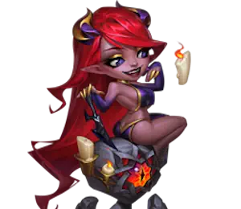
- Classe principale : Mage
- Rôle principal : Dégâts purs / Sacrifice
- Position : Ligne arrière
- Stat principale : Intelligence
- Faction : Voie du Chaos
- Synergie : Xe'Sha, Aidan, Lilith, Dorian, Cleaver, Jhu
La fonction principale de Kendle est de déchiqueter les menaces à cible unique avec des dégâts magiques et des dégâts purs via Baiser de Lave, tandis que Purge par la Douleur transforme chaque attaque de base en coup de dégâts purs qui évolue avec sa Santé maximale. La mécanique de Sacrifice est sa signature : elle perd volontairement des PV pour infliger des dégâts, et ses alliés peuvent brûler pour déclencher des procs de dégâts purs supplémentaires.
En tant qu'héroïne d'Intelligence, chaque point d'Intelligence lui donne trois points d'Attaque Magique, un point de Défense Magique et un point supplémentaire d'Attaque Physique. Investir dans sa stat principale renforce pratiquement chaque formule de compétence de son arsenal, ce qui la fait puissamment évoluer en fin de partie.
Avantages et inconvénients de Kendle - Hero Wars Alliance
✅ Avantages
- Dégâts qui ignorent les défenses : La majeure partie des dégâts de Kendle est constituée de dégâts purs, ils ignorent à la fois l'Armure et la Défense Magique, ce qui la rend efficace contre n'importe quelle configuration défensive.
- Mécaniques critiques intégrées : Purge par la Douleur permet à ses attaques de base d'infliger des dégâts purs critiques à 200 % en fonction de la Chance de Coup Critique Magique, créant un énorme potentiel de burst.
- Extension des critiques à l'équipe : Sa Purge par la Douleur Légendaire étend le multiplicateur de critique de 200 % à tous les dégâts purs des alliés, un bonus d'équipe qui change complètement la donne pour les compositions Sacrifice.
- Pilier de la faction Chaos : Kendle amplifie chaque mécanique basée sur le Sacrifice dans l'alignement de la Voie du Chaos, multipliant l'efficacité de Xe'Sha, Aidan, Lilith et Dorian.
- Passive évolutive : Vague d'Agonie déclenche automatiquement 180 498 dégâts purs toutes les 10 secondes, garantissant une pression constante tout au long du combat.
❌ Inconvénients
- Risque autodestructeur : Ses mécaniques de Sacrifice drainent constamment ses propres PV. Si elle tombe sous les 30 %, la plupart de ses compétences offensives se désactivent, ce qui réduit drastiquement ses dégâts.
- Zéro contrôle de foule : Kendle ne peut ni arrêter, ni étourdir, ni retarder les ennemis. Elle dépend entièrement de ses coéquipiers pour la protection et le peel.
- Dépendante de l'équipe : Ses meilleures compétences se déclenchent à partir de la perte de santé des alliés. Elle est bien en dessous de son potentiel dans des compositions sans Sacrifice.
- Offensive dépendante des seuils : Crushing et plusieurs éléments de son kit deviennent plus puissants seulement lorsque l’ennemi passe sous 50% de Santé ; Kendle doit donc créer assez de pression pour atteindre cette fenêtre d’exécution.
Kendle — Comparaison des stats maximales des talismans
| Stat | Talisman de la Torture |
Talisman de la Douleur |
|---|---|---|
 Intelligence Intelligence |
14,384 |
12,384 |
 Agilité Agilité |
2,296 |
2,296 |
 Force Force |
2,968 |
2,968 |
 Santé Santé |
721,988 |
721,988 |
 Attaque Physique Attaque Physique |
25,030 |
23,030 |
 Attaque Magique Attaque Magique |
176,663 |
170,663 |
 Armure Armure |
19,544 |
19,544 |
 Défense Magique Défense Magique |
24,427 |
22,427 |
 Chance de Coup Critique Magique Chance de Coup Critique Magique |
8,378 |
14,978 |
 Écrasement Écrasement |
11,840 |
19,840 |
Les deux configurations aux statistiques maximales incluent les 2,960 de Chance de Coup Critique Magique de la Skin Pétales Cramoisis et les 11,840 d'Écrasement de la Skin Démons intérieurs+. Le Talisman de la Torture atteint donc 8,378 de Chance de Coup Critique Magique et 11,840 d'Écrasement, tandis que le Talisman de la Douleur atteint 14,978 de Chance de Coup Critique Magique et 19,840 d'Écrasement.
Guide des talismans de Kendle dans Hero Wars Alliance
Contrairement aux skins, qui fournissent toujours leurs bonus, seul le talisman équipé applique ses stats. Kendle peut désormais choisir entre la régularité défensive du Talisman de la Torture et la puissance d’exécution nettement supérieure du nouveau Talisman de la Douleur.
Talisman de la Torture — Option défensive
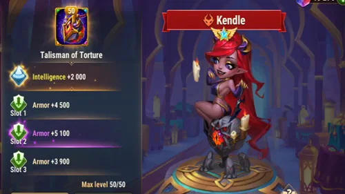
Le Talisman de la Torture accorde +2 000 Intelligence, soit également +6 000 Attaque Magique, +2 000 Défense Magique et +2 000 Attaque Physique. L’Attaque Magique supplémentaire renforce les formules de Baiser de Lave, Douce Torture et Feu Ami.
Ses trois emplacements accordent chacun +6 600 Armure, pour un total de +19 800. C’est le meilleur choix situationnel contre une forte pression physique, car il aide Kendle à rester au-dessus du seuil de 30% de Santé qui maintient ses compétences de Sacrifice actives.
| Talisman | Stat principale | Emplacements | Bonus total |
|---|---|---|---|
Talisman de la Torture |
+2,000 Intelligence +6,000 Attaque Magique |
3 × +6,600 Armure | +19,800 Armure |
Talisman de la Douleur — Meilleur choix global
Crushing + Chance de Coup Critique Magique
Le Talisman de la Douleur accorde +8 000 Crushing et trois emplacements de +2 200 Chance de Coup Critique Magique, soit +6 600 au total. Une fois équipé avec la Skin Pétales Cramoisis au maximum, Kendle atteint 14 978 Chance de Coup Critique Magique. Crushing augmente tous ses dégâts physiques, magiques et purs contre les ennemis sous 50% de Santé.
Les coups critiques magiques infligent 2,5× (250%) les dégâts magiques normaux. Le premier impact magique de Baiser de Lave peut donc profiter d’un énorme gain de burst. Normalement, cette chance ne s’applique ni aux dégâts physiques ni aux dégâts purs ; Purge par la Douleur constitue une exception propre à la compétence et permet à ses attaques de base de dégâts purs d’utiliser la Chance de Coup Critique Magique avec son multiplicateur spécifique de 200%.
Cette combinaison correspond mieux aux compétences de Kendle : Baiser de Lave cible automatiquement l’ennemi ayant le moins de Santé, donc la cible la plus susceptible d’activer Crushing, tandis que Purge par la Douleur utilise directement sa Chance de Coup Critique Magique. Le second talisman améliore à la fois le burst magique à 2,5× et la fréquence des critiques purs.
| Talisman | Stat principale | Emplacements | Bonus total |
|---|---|---|---|
Talisman de la Douleur |
Crushing +8,000 Augmente les dégâts physiques, magiques et purs contre les ennemis sous 50% de Santé |
3 × +2,200 Chance de Coup Critique Magique | +6,600 Chance de Coup Critique Magique Dégâts critiques magiques : 2,5× |
Quel est le meilleur talisman de Kendle ?
Le Talisman de la Douleur est le meilleur choix global de Kendle. Il améliore l’exécution de Baiser de Lave, les critiques de Purge par la Douleur et conserve la même Santé maximale, sans réduire les dégâts basés sur la Santé de Purge par la Douleur ou Vague d’Agonie. Utilise le Talisman de la Torture uniquement lorsque l’Armure supplémentaire est nécessaire contre une forte pression physique.
Astuces d’Alexandre : Équipe le Talisman de la Douleur dans la plupart des combats. Ses +6 600 de critique magique soutiennent directement Purge par la Douleur, tandis que +8 000 Crushing rendent Baiser de Lave et les frappes répétées de dégâts purs beaucoup plus dangereuses sous 50% de Santé ennemie.
Vidéo YouTube : deuxième talisman de Kendle : méta ou gaspillage ?

▶ Regarder cette vidéo sur YouTube
Priorité d'amélioration des compétences de relique légendaire de Kendle - Hero Wars Alliance
Les reliques renforcent les héros en leur accordant de nouvelles capacités tout en améliorant celles qu'ils possèdent déjà. Au-delà des améliorations de compétences, les Reliques augmentent également deux statistiques secondaires de chaque héros. Les stats améliorées dépendent de la manière dont les formules de compétences de ce héros évoluent. Voici comment prioriser les compétences de Kendle pour transformer la Mage de la Douleur en machine de dégâts purs inarrêtable.
Note de calcul du Talisman de la Douleur : Les valeurs fixes ci-dessous utilisent 170 663 Attaque Magique, 721 988 Santé et 14 978 Chance de Coup Critique Magique. Les dégâts sont affichés avant Crushing, car le bonus final dépend de la stat principale de la cible. Contre un ennemi sous 50% de Santé, multiplie les dégâts par 1 + (8 000 / (8 000 + stat principale de la cible)).
1re - Baiser de Lave
Description en jeu : Attaque l'ennemi ayant le moins de Santé et inflige des dégâts magiques. Tant que la Santé de Kendle est supérieure à 30 %, elle inflige des dégâts purs à la cible chaque seconde, en sacrifiant 10 % de ses propres points de vie. La compétence prend fin quand la cible meurt.
Explication de la compétence : C'est la principale compétence active de Kendle et son principal outil d'élimination de cible. Elle se concentre sur l'ennemi le plus blessé et déclenche une attaque en deux phases : un burst instantané de dégâts magiques suivi d'une canalisation de dégâts purs par seconde. La canalisation s'arrête lorsque la cible meurt, ce qui rend Kendle plus efficace lorsqu'elle est associée à d'autres infligeurs de dégâts qui affaiblissent d'abord les ennemis. Le coût de Sacrifice, 10 % de PV par seconde, rend la gestion de la vie essentielle : cette compétence la rapproche dangereusement du seuil de 30 % si elle canalise trop longtemps.
Formule avec le Talisman de la Torture
- Formule 1 - Dégâts magiques, frappe initiale : 294,994 (150% × 176,663 + 30,000)
- Formule 2 - Dégâts purs par seconde, canalisation : 100,331 (50% × 176,663 + 12,000)
Formule avec le Talisman de la Douleur
- Dégâts magiques (impact initial): 285 994 (150% × 170 663 + 30 000)
- Coup critique magique (250%): 714 986
- Dégâts purs par seconde: 97 331 (50% × 170 663 + 12 000)
- Dégâts purs critiques via Purge par la Douleur (200%): 194 663
- Crushing: Sous 50% de Santé de la cible, toutes les valeurs reçoivent le multiplicateur supplémentaire 1 + (8 000 / (8 000 + stat principale de la cible)).
Info sur l'animation de la compétence
- Mots-clés : Sacrifice, Dégâts Magiques, Dégâts Purs
- Cible : Ennemi avec le moins de Santé
- Coût en PV : 10 % de la Santé de Kendle par seconde pendant la canalisation
- Condition de fin de canalisation : La cible meurt ou les PV de Kendle tombent sous 30 %
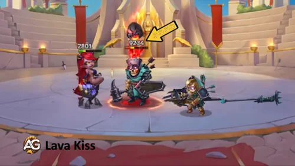
Priorité d'évolution : Très élevée - Baiser de Lave est la principale compétence de burst mono-cible de Kendle et sa compétence active la plus importante. La combinaison dégâts magiques + dégâts purs est mortelle contre l'ennemi ayant le moins de PV. L'améliorer augmente directement les deux formules de dégâts. À prioriser avec Purge par la Douleur.
1re - Baiser de Lave, compétence améliorée, relique légendaire : Niveau 10
Description en jeu : Avant d'activer la compétence, restaure 30 % de ses points de vie et augmente sa Chance de Coup Critique Magique.
Explication de la compétence : L'amélioration légendaire résout le plus gros problème de Baiser de Lave : le drain de vie. Avant que la compétence ne s'active, Kendle se soigne de 30 % de ses PV maximum, soit environ 216 596 PV, ce qui réinitialise sa marge de Sacrifice et lui permet de canaliser en sécurité sans tomber sous le seuil critique de 30 %. Elle gagne également une poussée de Chance de Coup Critique Magique, +40,132 (20% × 176,663 + 4,800), ce qui rend les frappes de dégâts purs suivantes bien plus susceptibles de critiquer à 200 %. Cela transforme une compétence risquée et autodestructrice en une rotation de dégâts durable et fiable.
Formule avec le Talisman de la Torture
- Augmentation de la Chance de Coup Critique Magique : +40,132 (20% × 176,663 + 4,800)
- Restauration de PV : 30% de la Santé maximale ≈ +216,596 PV
Formule avec le Talisman de la Douleur
- Augmentation de Chance de Coup Critique Magique: +38 932 (20% × 170 663 + 4 800)
- Chance de Coup Critique Magique totale de Kendle pendant le bonus: 53 910 (14 978 + 38 932)
- Restauration de PV: 30% de la Santé maximale ≈ +216 596 PV
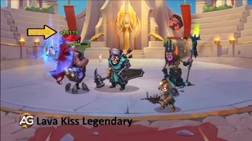
Priorité d'évolution : Moyenne haute - La restauration de PV compense l'autodégât de la canalisation et maintient Kendle en mode offensif plus longtemps. Le bonus de Chance de Critique améliore directement le taux de déclenchement à 200 % de Purge par la Douleur. Débloque cette amélioration au niveau 10 de relique après Vague d'Agonie (niveau 1).
2e - Douce Torture
Description en jeu : Augmente la Chance de Coup Critique Magique pour elle-même et pour tous les alliés ayant subi des dégâts venant de leurs propres compétences ou de compétences alliées depuis la dernière utilisation de cette compétence.
Explication de la compétence : Douce Torture est le buff d'équipe de Kendle et une pierre angulaire de sa synergie Sacrifice. Tout allié ayant subi des dégâts qu'il s'est infligés lui-même ou des dégâts déclenchés par des compétences alliées, brûlure de Feu Ami, drain de Xe'Sha, sacrifice de Lilith ou coût d'auto-soin de Dorian, reçoit un énorme bonus de Chance de Coup Critique Magique de +76,665 (40% × 176,663 + 6,000). Pour Kendle, ce bonus augmente directement la probabilité que les attaques de base de Purge par la Douleur critiquent à 200 %. Dans une équipe Sacrifice complète, presque tous les héros remplissent la condition, ce qui fait de cette compétence un amplificateur offensif d'équipe à faible temps de recharge.
Formule avec le Talisman de la Torture
- Augmentation de la Chance de Coup Critique Magique, elle-même et alliés qualifiés : +76,665 (40% × 176,663 + 6,000)
Formule avec le Talisman de la Douleur
- Augmentation de Chance de Coup Critique Magique (Kendle et alliés éligibles): +74 265 (40% × 170 663 + 6 000)
- Total de Kendle lorsqu’elle bénéficie du bonus: 89 243 (14 978 + 74 265)
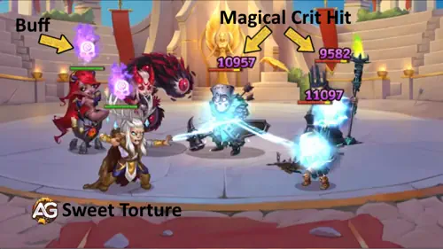
Priorité d'évolution : Élevée - Un bonus de +74 265 de Chance de Coup Critique Magique pour toute l'équipe Sacrifice active est énorme. Plus de critiques avec Purge par la Douleur signifie plus de frappes de base à 200 %. Dans une composition Chaos où chaque héros subit des dégâts déclenchés par un allié, cette compétence atteint son efficacité maximale à chaque activation. Améliore-la en même temps que Baiser de Lave.
3e - Feu Ami
Description en jeu : Enflamme l'allié ayant le pourcentage le plus élevé de Santé maximale, ce qui lui fait perdre 5 % de ses points de vie par seconde. Chaque fois que l'allié enflammé attaque un ennemi, Kendle inflige des dégâts purs à sa cible. L'effet prend fin lorsque les points de vie de l'allié descendent sous 40 %. Cette compétence ne peut pas être appliquée à un héros déjà enflammé.
Explication de la compétence : Feu Ami relie le moteur de dégâts purs de Kendle à ton attaquant le plus rapide. L'allié enflammé perd 5 % de PV par seconde, ce qui le qualifie déjà pour le bonus de critique de Douce Torture, mais surtout, chaque attaque de cet allié déclenche une frappe gratuite de dégâts purs de Kendle : 40,132 par proc (20% × 176,663 + 4,800). Les attaquants physiques rapides comme Yasmine, avec plusieurs attaques par seconde, ou Jhu génèrent des procs à très grande vitesse, faisant de Feu Ami un flux de dégâts multiplicatif. La brûlure prend fin à 40 % de PV, ce qui empêche l'allié de mourir uniquement à cause de cet effet.
Formule avec le Talisman de la Torture
- Dégâts purs par attaque de l'allié : 40,132 (20% × 176,663 + 4,800)
Formule avec le Talisman de la Douleur
- Dégâts purs par attaque de l’allié: 38 932 (20% × 170 663 + 4 800)
- Dégâts purs critiques via Purge par la Douleur (200%): 77 864
- Sous 50% de Santé de la cible: Les deux valeurs reçoivent le bonus supplémentaire de 8 000 Crushing.
Info sur l'animation de la compétence
- Mots-clés : Sacrifice, Dégâts Purs
- Cible : Allié ayant le plus haut pourcentage de Santé maximale
- Taux de perte de PV : 5 % par seconde pour l'allié enflammé
- Condition de fin : Les PV de l'allié passent sous 40 % du maximum
- Restriction : Ne peut pas être appliquée à un héros déjà enflammé
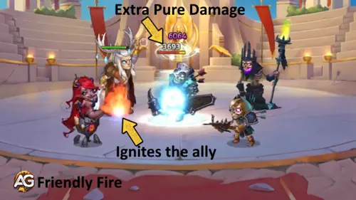
Priorité d'évolution : Moyenne haute - Les dégâts purs par coup, 38 932, se multiplient avec la vitesse d'attaque. Associée à un attaquant rapide comme Yasmine, la production cumulée devient très importante. L'activation du Sacrifice qualifie aussi l'allié enflammé pour le bonus de critique de Douce Torture. Améliore cette compétence après les compétences du noyau principal.
4e - Purge par la Douleur
Description en jeu : Si Kendle a plus de 30 % de points de vie, ses attaques de base consomment 5 % de sa Santé et infligent des dégâts purs. Ses dégâts purs peuvent désormais devenir critiques. La chance dépend de sa Chance de Coup Critique Magique.
Explication de la compétence : C'est la passive la plus importante de Kendle et la raison pour laquelle elle inflige autant de dégâts soutenus. Chaque attaque de base qu'elle effectue : 1. coûte 5 % de sa Santé maximale, 2. inflige des dégâts purs qui ignorent l'Armure et la Défense Magique, et 3. peut infliger un coup critique à 200 %. Avec une Santé = 721,988 avec l’un ou l’autre talisman, chaque coup inflige 153,397 (20% × 721,988 + 9,000) ou 306,794 sur un coup critique à 200 %. Plus Kendle possède de Santé, plus elle frappe fort. Garde-la au-dessus de 30 % de PV et elle devient un moteur de dégâts purs ininterrompu à chaque attaque.
Formule avec le Talisman de la Torture
- Dégâts purs par attaque de base : 153,397 (20% × 721,988 + 9,000)
- Dégâts purs critiques, 200 % : 306,794
Formule avec le Talisman de la Douleur
- Dégâts purs par attaque de base: 153 397 (20% × 721 988 + 9 000)
- Dégâts purs critiques (200%): 306 794
- Chance de Coup Critique Magique: 14 978 — augmente la fréquence de ces critiques purs.
- Sous 50% de Santé de la cible: Les attaques normales et critiques reçoivent le bonus de 8 000 Crushing.
Info sur l'animation de la compétence
- Mots-clés : Sacrifice, Dégâts Purs, Critique
- Coût en PV par attaque : 5 % de la Santé maximale
- Multiplicateur critique : 200 %
- Condition active : Kendle doit avoir plus de 30 % de Santé
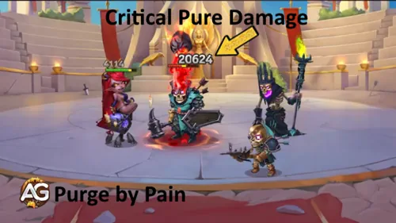
Priorité d'évolution : Très élevée - Cette passive est responsable de la majorité des dégâts soutenus de Kendle. 153 397 dégâts purs par attaque de base, ou 306 794 sur un critique, en ignorant toutes les défenses, c'est extraordinaire. C'est probablement l'amélioration la plus impactante que tu puisses faire pour les performances individuelles de Kendle.
4e - Purge par la Douleur, compétence améliorée, relique légendaire : Niveau 20
Description en jeu : Les dégâts purs des alliés peuvent désormais devenir critiques. La chance dépend de la Chance de Coup Critique Magique.
Explication de la compétence : Cette amélioration unique change complètement la valeur de toute l'équipe. Le multiplicateur de coup critique de 200 % de Purge par la Douleur s'étend désormais aux dégâts purs de tous les alliés. Tout allié infligeant des dégâts purs, Cleaver avec Putréfaction, Jhu avec Je vais prendre ta vie et Yasmine avec Toxine Inconnue, peut maintenant infliger un coup critique pour doubler les dégâts en fonction de la Chance de Coup Critique Magique. Dans une équipe Sacrifice où Kendle améliore continuellement la Chance de Coup Critique Magique via Douce Torture et Lord Beholder, chaque infligeur de dégâts purs de ton équipe devient bien plus dangereux. Kendle se transforme d'une simple infligeuse de dégâts individuelle en un multiplicateur de dégâts purs pour toute l'équipe.
Info sur l'animation de la compétence
- Mots-clés : Sacrifice, critique de dégâts purs d'équipe
- Multiplicateur critique pour les alliés : 200 %
- Condition du critique : Basée sur la Chance de Coup Critique Magique
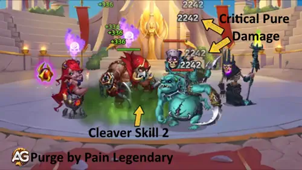
Priorité d'évolution : Élevée - L'extension du critique aux dégâts purs de toute l'équipe au niveau 20 de relique est l'une des améliorations légendaires les plus impactantes pour les compositions Sacrifice. Débloque-la après Vague d'Agonie (N1) et Baiser de Lave légendaire (N10).
5e - Vague d'Agonie, nouvelle compétence, relique légendaire : Niveau 1
Description en jeu : Si Kendle a plus de 30 % de points de vie, toutes les 10,0 secondes elle s'inflige 10 % de dégâts et attaque un ennemi à distance avec des dégâts purs. Si elle a moins de 30 % de points de vie, toutes les 10,0 secondes elle restaure 10 % de sa Santé.
Explication de la compétence : Vague d'Agonie est une passive brillante qui transforme Kendle en source automatique de dégâts. Toutes les 10 secondes, si elle est au-dessus de 30 % de PV, elle s'inflige 10 % de sa Santé maximale, soit environ 72 199 PV perdus, puis transforme cette douleur en une frappe de dégâts purs contre un ennemi à distance équivalente à 250 % des dégâts auto-infligés : 180,498 (250% × 72,199). Si elle est sous 30 % de PV, elle annule l'attaque et restaure à la place 10 % de sa Santé, soit également environ 72 199 PV, ce qui l'aide à repasser au-dessus du seuil où ses autres compétences offensives se réactivent. Ce comportement à double mode signifie que Vague d'Agonie n'est jamais gaspillée : elle inflige soit des dégâts, soit elle sauve la vie de Kendle.
Formule avec le Talisman de la Torture
- Dégâts auto-infligés, 10 % de la Santé : 72,199 PV (10% × 721,988)
- Dégâts purs contre l'ennemi à distance, 250 % de l'auto-dégât : 180,498 (250% × 72,199)
- Restauration de PV, mode sous 30 % : +72,199 PV
Formule avec le Talisman de la Douleur
- Dégâts auto-infligés (10% Santé): 72 199 PV (10% × 721 988)
- Dégâts purs à l’ennemi à distance: 180 498 (250% × 72 199)
- Dégâts purs critiques via Purge par la Douleur (200%): 360 996
- Sous 50% de Santé de la cible: Les dégâts normaux et critiques reçoivent le bonus de 8 000 Crushing.
- Restauration de PV sous 30% de Santé: +72 199 PV
Info sur l'animation de la compétence
- Mots-clés : Sacrifice, Dégâts Purs, Soin
- Intervalle de déclenchement : 10,0 secondes
- Cible en mode offensif : Ennemi à distance
- Condition active offensive : PV de Kendle au-dessus de 30 %
- Condition active de soin : PV de Kendle en dessous de 30 %
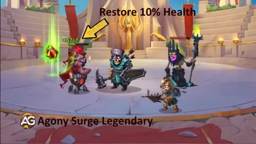
Priorité d'évolution : Élevée - C'est la première compétence légendaire à débloquer, au niveau 1 de relique, le point d'entrée le moins coûteux. 180 498 dégâts purs garantis toutes les 10 secondes contre un ennemi à distance représentent une énorme pression passive, et le soin lorsque Kendle passe sous les 30 % de PV lui donne un vrai mécanisme de survie. Débloque-la immédiatement lorsque tu commences sa progression de relique légendaire.
6e - Heure de la Moisson, nouvelle compétence, relique légendaire : Niveau 30
Description en jeu : Pendant 3,0 secondes, augmente ses dégâts purs chaque fois que des alliés subissent des dégâts de leurs propres compétences ou de compétences alliées.
Explication de la compétence : Heure de la Moisson crée une courte fenêtre de burst, mais extrêmement explosive. Pendant ses 3 secondes de durée, chaque fois qu'un allié subit des dégâts issus du Sacrifice ou d'effets de compétences alliées, les dégâts purs de Kendle augmentent de +10 % par charge. Dans une équipe Chaos Sacrifice complète avec les sacrifices de compétences de Lilith, le drain de Xe'Sha, les brûlures d'Aidan, l'auto-sacrifice de Dorian et les déclenchements de Feu Ami, cette compétence peut se cumuler de nombreuses fois en très peu de temps, ce qui fait que Purge par la Douleur, Baiser de Lave et Vague d'Agonie de Kendle infligent énormément plus de dégâts purs pendant ces 3 secondes. Le défi, c'est que la fenêtre est très courte ; elle est donc surtout décisive dans des compositions Sacrifice maximales capables de générer plusieurs déclenchements simultanés.
Info sur l'animation de la compétence
- Mots-clés : Buff de Dégâts Purs
- Durée : 3,0 secondes
- Augmentation des dégâts purs par charge : +10 %
- Déclencheur de charge : Chaque fois qu'un allié subit des dégâts de ses propres compétences ou de compétences alliées
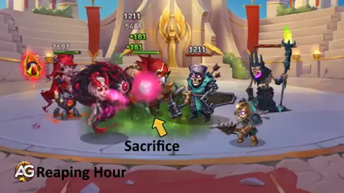
Priorité d'évolution : Moyenne - La mécanique de +10 % par charge a un véritable potentiel de burst dans une équipe Sacrifice maximale, mais la fenêtre de 3 secondes et le coût du niveau 30 de relique, le déblocage le plus cher, en font la dernière priorité. Débloque d'abord Vague d'Agonie (N1), Baiser de Lave légendaire (N10) et Purge par la Douleur légendaire (N20).
Meilleur skin pour Kendle dans Hero Wars Alliance
Les dégâts de Kendle évoluent avec l'Intelligence pour ses formules d'Attaque Magique et avec la Santé pour Purge par la Douleur. Priorise les skins qui augmentent ces deux stats afin de maximiser à la fois les dégâts de ses compétences actives et la pression soutenue de ses attaques de base. La Chance de Coup Critique Magique permet à Purge par la Douleur et aux autres attaques compatibles d'infliger plus souvent 200% de dégâts, tandis que l'Écrasement renforce sa capacité à achever les ennemis sous 50% de Santé.
Skin de base
Le Skin de base augmente l'attribut principal de Kendle : Intelligence +1,365. Comme l'Intelligence est sa stat principale, chaque point lui donne trois points d'Attaque Magique, un point de Défense Magique et un point supplémentaire d'Attaque Physique, amplifiant ainsi les formules de Baiser de Lave, Douce Torture et Feu Ami tout en améliorant sa Défense Magique pour plus de survie.
- Intelligence : +1,365
- Attaque Magique, via l'Intelligence : +4,095
- Défense Magique, via l'Intelligence : +1,365
- Attaque Physique, via l'Intelligence : +1,365
Priorité d'évolution : Très élevée - L'Intelligence fait évoluer directement les formules de dégâts basées sur l'Attaque Magique et améliore aussi la Défense Magique pour la survie. À prioriser en premier dans tous les cas.
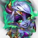
Skin Ardent / Skin Ardent+
Le Skin Ardent renforce la stat offensive la plus importante de Kendle : Attaque Magique. L'Attaque Magique étant la variable de mise à l'échelle dans ses trois formules de compétences actives — Baiser de Lave, Douce Torture et Tir Fratricide — ce skin amplifie directement chaque valeur de dégâts et le buff de critique pour l'équipe en même temps. La version Skin+ double le bonus et n'est disponible que pendant le Skin+ Event.
- Skin Ardent – Attaque Magique : +10 650
- Skin Ardent+ – Attaque Magique : +21 300
Impact avec Skin Ardent+ (+21 300 Attaque Magique) :
- Baiser de Lave – bonus de dégâts magiques : +31 950 (150% × 21 300)
- Baiser de Lave – bonus de dégâts purs : +10 650 (50% × 21 300)
- Douce Torture – bonus de Chance de Critique Magique : +8 520 (40% × 21 300)
- Tir Fratricide – dégâts purs par déclenchement : +4 260 (20% × 21 300)
Priorité d'évolution : Très élevée – L'Attaque Magique est la stat offensive la plus précieuse de Kendle. Un bonus de +21 300 AM du Skin+ met à l'échelle toutes les formules de compétences actives en même temps et augmente le buff de Chance de Critique Magique de Douce Torture pour toute l'équipe. Privilégie la version Skin+ dès que l'événement est disponible.
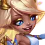
Skin Angélique
Le Skin Angélique donne de la Santé, l'une des meilleures stats pour Kendle, car elle améliore sa survie et augmente directement les dégâts de Purge par la Douleur sur chaque attaque de base renforcée.
- Santé : +106,645
- Bonus de Purge par la Douleur par coup grâce à la Santé : +21,329
Priorité d'évolution : Très élevée - La Santé est une stat premium pour Kendle, car elle lui permet de tenir plus longtemps avec ses mécaniques d'autodégâts tout en ajoutant beaucoup de scaling de dégâts purs via Purge par la Douleur. À prioriser juste après le Skin de base.
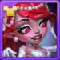
Skin Pétales Cramoisis
La Skin Pétales Cramoisis accorde de la Chance de Coup Critique Magique et renforce l'identité critique de Kendle. Au niveau maximal, son bonus de +2,960 porte son total à 8,378 avec le Talisman de la Torture ou à 14,978 avec le Talisman de la Douleur, rendant les coups critiques à 200% de Purge par la Douleur plus réguliers.
- Chance de Coup Critique Magique : +2,960
- Maximum avec le Talisman de la Torture : 8,378
- Maximum avec le Talisman de la Douleur : 14,978
Priorité d'évolution : Élevée – Cette skin offre à Kendle un précieux bonus offensif multiplicatif et fonctionne particulièrement bien avec le Talisman de la Douleur. Améliore d'abord l'Intelligence, l'Attaque Magique et la Santé, puis investis dans Pétales Cramoisis pour rendre ses coups critiques plus réguliers.
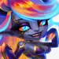
Skin Démons intérieurs+
La Skin Démons intérieurs normale accorde +5,920 d'Écrasement, tandis que la Skin Démons intérieurs+ double ce bonus pour atteindre +11,840 d'Écrasement. La version Skin+ conserve le même coût d'évolution qu'une skin normale. L'Écrasement augmente tous les dégâts physiques, magiques et purs que Kendle inflige aux ennemis sous 50% de Santé, mais ne s'applique pas à la perte de Santé causée par les compétences alliées.
- Skin Démons intérieurs – Écrasement : +5,920
- Skin Démons intérieurs+ – Écrasement : +11,840
- Coût d'évolution : 50,410 Pierres de skin, comme pour une skin normale
- Écrasement maximal avec le Talisman de la Torture : 11,840
- Écrasement maximal avec le Talisman de la Douleur : 19,840
Priorité d'évolution : Élevée – Le bonus d'Écrasement doublé rend Kendle bien plus dangereuse dès qu'un ennemi passe sous 50% de Santé et améliore tous les types de dégâts qu'elle inflige. Améliore d'abord l'Intelligence, l'Attaque Magique et la Santé, car elles apportent de la valeur pendant tout le combat, puis investis dans la Skin Démons intérieurs+ pour renforcer sa capacité à achever les cibles.
Priorité d'évolution des artefacts de Kendle dans Hero Wars Alliance
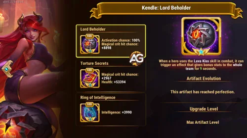
Les artefacts de Kendle sont centrés sur la Chance de Coup Critique Magique, la stat qui permet à la mécanique critique à 200 % de Purge par la Douleur de se déclencher de manière fiable. Priorise les artefacts qui accumulent chance de critique et survie afin de maximiser ses dégâts purs soutenus à chaque combat.
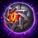
1er - Artefact d'arme : Lord Beholder
Quand Kendle utilise une compétence en combat, cet artefact déclenche un effet qui accorde un bonus de Chance de Coup Critique Magique à toute l'équipe. Avec 100 % de chance d'activation, cela garantit une fenêtre critique d'équipe à chaque fois que Kendle utilise une compétence, créant des fenêtres constantes de critique pour les procs de Purge par la Douleur ainsi que pour tous les alliés infligeant des dégâts purs qui bénéficient de Purge par la Douleur Légendaire.
- Chance d'activation : 100%
- Bonus de Chance de Coup Critique Magique pour l'équipe : +8,898
- Durée : 9 secondes
Priorité d'évolution : Très élevée - C'est le fondement de l'identité critique de Kendle. Un bonus garanti de +8 898 de Chance de Coup Critique Magique pour toute l'équipe assure que les critiques de Purge par la Douleur à 200 % de dégâts se déclenchent de manière constante, et les critiques de dégâts purs des alliés en profitent également une fois Purge par la Douleur Légendaire débloquée. À améliorer en premier dans tous les cas.
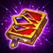
2e - Artefact livre : Secrets de Torture
Le Livre offre un mélange de Chance de Coup Critique Magique et de Santé. Ces deux stats sont cruciales pour Kendle : la Chance de Coup Critique Magique augmente la fréquence des attaques critiques à 200 %, et la Santé amplifie directement la formule de Purge par la Douleur, 20% Santé + 9,000 par attaque de base. Les +53 394 de Santé ajoutent +10 679 dégâts à chaque frappe de base de Purge par la Douleur et prolongent également sa survie au-dessus du seuil des 30 %.
- Chance de Coup Critique Magique : +2,967
- Santé : +53,394
- Bonus de Purge par la Douleur par coup grâce à la Santé : +10,679
Priorité d'évolution : Très élevée - Cet artefact bénéficie à Kendle sur deux plans à la fois : plus de chance de critique et plus de Santé qui fait évoluer les dégâts de Purge par la Douleur. À améliorer en parallèle de l'artefact d'arme.

3e - Artefact anneau : Anneau d'Intelligence
L'Anneau augmente la stat principale de Kendle, Intelligence. Chaque point d'Intelligence accorde Attaque Magique, Défense Magique et Attaque Physique, renforçant ainsi ses formules de compétences actives ainsi que sa résistance défensive grâce à la Défense Magique supplémentaire.
- Intelligence : +3,990
- Attaque Magique, via l'Intelligence : +11,970
- Défense Magique, via l'Intelligence : +3,990
- Attaque Physique, via l'Intelligence : +3,990
Priorité d'évolution : Élevée - Fait évoluer les formules basées sur l'Attaque Magique de Baiser de Lave, Douce Torture et Feu Ami, tandis que les +3 990 de Défense Magique aident Kendle à survivre aux menaces magiques en ligne arrière. À améliorer après l'arme et le livre.
Priorité d'évolution des glyphes de Kendle
Les priorités des glyphes de Kendle reflètent sa double évolution : Attaque Magique pour les formules de compétences actives, et Santé pour les dégâts passifs de Purge par la Douleur ainsi que l'amplificateur d'auto-dégâts de Vague d'Agonie. Les deux augmentent à la fois son potentiel offensif et sa survie au-dessus du seuil critique de 30 % de PV.
1er glyphe - Attaque Magique
L'Attaque Magique fait évoluer les trois principales formules actives de Kendle : Baiser de Lave, magique 150 % AM + 30 000 et pur 50 % AM + 12 000, Douce Torture, buff de critique 40 % AM + 6 000, et Feu Ami, proc de dégâts purs 20 % AM + 4 800. Le buff critique de Douce Torture lui-même évolue avec l'Attaque Magique, ce qui signifie : plus d'AM = un bonus critique d'équipe plus élevé à chaque activation.
Stats au niveau 80 : +12,850 Attaque Magique.
Priorité d'évolution : Très élevée, 1re au total - C'est le glyphe ayant le plus fort impact sur les dégâts des compétences actives de Kendle ainsi que sur les formules de buff d'équipe. À améliorer en premier.
2e glyphe - Santé
La Santé est une stat particulièrement puissante pour Kendle : Purge par la Douleur évolue selon 20% Santé + 9,000 par attaque de base. Avec +122 800 Santé grâce à ce glyphe, Purge par la Douleur gagne +24 560 dégâts par attaque de base ou +49 120 sur un critique à 200 %. Elle prolonge aussi directement sa survie au-dessus du seuil des 30 % de PV et renforce le coup auto-infligé de Vague d'Agonie, 10 % de la Santé, ce qui augmente également les dégâts de cette compétence.
Stats au niveau 80 : +122,800 Santé.
Priorité d'évolution : Très élevée, 2e au total - Augmente simultanément les dégâts, prolonge le temps d'activité offensive et renforce Vague d'Agonie. C'est un glyphe polyvalent exceptionnel pour Kendle. À améliorer juste après l'Attaque Magique.
3e glyphe - Chance de Coup Critique Magique
La Chance de Coup Critique Magique active le multiplicateur critique à 200 % de Purge par la Douleur sur chaque attaque de base. Plus de chance de critique signifie plus de frappes critiques à 306 794 au lieu de frappes normales à 153 397, ce qui double effectivement le rendement par proc. Cumule cette stat avec Lord Beholder et Douce Torture pour une couverture critique maximale.
Stats au niveau 80 : +4,170 Chance de Coup Critique Magique.
Priorité d'évolution : Élevée, 3e au total - La valeur multiplicative est énorme malgré un nombre brut plus faible. Chaque proc de critique magique fait toute la différence entre 153 397 et 306 794 dégâts par attaque de base.
4e glyphe - Défense Magique
La Défense Magique réduit les dégâts reçus des mages ennemis. En tant qu'héroïne d'Intelligence placée en ligne arrière, Kendle est une cible naturelle pour les dégâts magiques de zone ennemis. Chaque frappe magique accélère sa chute vers la zone dangereuse des 30 % de PV, là où ses compétences offensives de Sacrifice se désactivent.
Stats au niveau 80 : +12,850 Défense Magique.
Priorité d'évolution : Élevée, 4e au total - Chaque point de Défense Magique réduit la vitesse à laquelle Kendle approche de la zone de danger des 30 % de PV, ce qui prolonge son temps d'activité offensive. À améliorer après les trois glyphes offensifs ci-dessus.
5e glyphe - Intelligence
L'Intelligence est la stat principale de Kendle et fournit un bonus polyvalent : chaque point accorde Attaque Magique, Défense Magique et Attaque Physique. C'est un bonus équilibré, mais chaque composant individuel est plus faible que celui des glyphes spécialisés ci-dessus.
- Intelligence : +2,110
- Attaque Magique, via l'Intelligence : +6,330
- Défense Magique, via l'Intelligence : +2,110
- Attaque Physique, via l'Intelligence : +2,110
Priorité d'évolution : Moyenne, 5e au total - C'est un bonus bien réparti, mais les glyphes dédiés Santé, Attaque Magique, Chance Critique et Défense Magique apportent chacun des valeurs individuelles plus élevées pour les besoins spécifiques de Kendle. À monter en dernier parmi ses cinq glyphes.
Synergie de Kendle dans Hero Wars Alliance
Kendle excelle dans les compositions Sacrifice où les alliés perdent fréquemment des PV à cause de leurs propres compétences ou de compétences alliées. Ces héros créent des boucles de rétroaction de dégâts purs croissants et libèrent toute la puissance du buff critique de Douce Torture.
Xe'Sha

Xe'Sha est le meilleur partenaire individuel de synergie de Kendle. Rayon Mortel et Puissance Spirituelle drainent à plusieurs reprises les PV des alliés, déclenchant les mécaniques de Sacrifice et les qualifiant pour le buff critique de Douce Torture. Xe'Sha gagne également de l'Attaque Magique chaque fois que des alliés perdent des PV, créant ainsi une boucle d'évolution offensive parallèle à l'amplification des dégâts de Kendle.
Aidan

Le Rituel du Phénix d'Aidan sacrifie sa propre vie et applique une brûlure à l'allié le plus en forme après avoir augmenté ses PV. Ses Liens de Feu drainent également à plusieurs reprises la vie de l'allié le plus en forme. Plusieurs déclencheurs de Sacrifice par cycle, combinés à des boosts de PV qui maintiennent l'équipe en vie plus longtemps, font d'Aidan un pilier de toute composition Kendle.
Lilith

Lilith sacrifie 5 % de sa propre vie avant chaque compétence lorsqu'elle est au-dessus de 25 % de PV. Ces auto-dégâts fréquents la qualifient constamment pour le buff critique de Douce Torture pendant que Lilith convertit la perte de PV en Attaque Magique bonus, ce qui permet aux deux héroïnes d'évoluer offensivement au même rythme. La synergie Chaos entre Kendle et Lilith est l'une des plus fortes du jeu.
Dorian

Dorian utilise Amulette des Ancêtres, sacrifiant 20 % de sa propre vie pour soigner les alliés. Cet auto-dégât déclenche les mécaniques de Sacrifice tout en apportant suffisamment de sustain pour maintenir toute l'équipe au-dessus des seuils de PV nécessaires aux compétences offensives. Dorian est le noyau de sustain qui permet à l'équipe Sacrifice de fonctionner à plein régime sans s'autodétruire.
Cleaver

La Putréfaction de Cleaver provoque des auto-dégâts tout en infligeant des dégâts purs aux ennemis. Avec la Purge par la Douleur Légendaire de Kendle qui étend le multiplicateur de critique à 200 % à tous les dégâts purs des alliés, les attaques de dégâts purs de Cleaver peuvent elles aussi critiquer, ce qui fait de lui une menace de première ligne bien plus dangereuse qu'il ne le serait sans Kendle.

Jhu perd 2 % de sa propre vie par attaque dans le mode Je vais prendre ta vie, infligeant des dégâts purs selon les PV actuels de l'ennemi. Ses auto-dégâts fréquents le qualifient pour le buff critique de Douce Torture et, avec Purge par la Douleur Légendaire, chacun de ses coups de dégâts purs peut devenir un critique à 200 %. Jhu devient l'un des infligeurs de dégâts purs les plus dangereux du jeu lorsqu'il est associé à Kendle.

La vitesse d'attaque élevée de Yasmine lui permet d'attaquer très fréquemment, et avec les bonus de Chance de Coup Critique Magique de Kendle, Douce Torture, Lord Beholder et Purge par la Douleur Légendaire, sa séquence d'attaques rapides devient une pluie de critiques de dégâts purs à 200 %, faisant du duo Kendle + Yasmine l'une des combinaisons de burst les plus explosives disponibles.
Meilleures équipes pour Kendle dans Hero Wars Alliance
Kendle fonctionne le mieux dans des compositions axées sur le Sacrifice, où plusieurs alliés génèrent une perte de PV via leurs propres compétences, activant ainsi en même temps le buff critique de Douce Torture, les procs de Feu Ami et les charges d'Heure de la Moisson.
Top équipes pour Kendle
- Kendle | Dorian | Xe'Sha | Aidan | Cleaver - Sacrifice Chaos classique avec synergie maximale
- Kendle | Aidan | Dorian | Kayla | Cleaver - Variante hybride offensive à dégâts purs
- Kendle | Polaris | Folio | Miu | Electra - Alternative hybride magique critique
Conclusion
Kendle est l'une des héroïnes les plus uniques et gratifiantes de Hero Wars Alliance. Sa mécanique de Sacrifice transforme l'autodestruction en forme d'art : chaque goutte de PV qu'elle dépense devient une arme, et chaque allié qu'elle embrase devient une source de dégâts purs amplifiés. Plus son équipe embrasse la douleur, plus Kendle devient dominante.
Ses Reliques Légendaires la transforment d'un canon de verre risqué en multiplicateur central de dégâts pour toute l'équipe. Vague d'Agonie fournit automatiquement 180 498 dégâts purs toutes les 10 secondes dès le niveau 1 de relique, le point d'entrée légendaire le moins coûteux du jeu. Baiser de Lave légendaire restaure 30 % de PV pour maintenir la machine de Sacrifice en marche. Et Purge par la Douleur légendaire au niveau 20 étend le multiplicateur critique de 200 % aux dégâts purs de chaque allié, faisant d'elle le multiplicateur ultime pour Jhu, Cleaver, Yasmine et tout autre infligeur de dégâts purs de son équipe.
Privilégie le Talisman de la Douleur pour ses 14 978 de Chance de Coup Critique Magique et 8 000 Crushing lorsqu'il est associé à la Skin Pétales Cramoisis, ainsi que l’Attaque Magique et la Santé via les glyphes et les skins. Garde le Talisman de la Torture comme option défensive contre une forte pression physique et construis une composition complète de Sacrifice de la Voie du Chaos avec Xe'Sha, Aidan, Lilith et Dorian.
Explore de nouvelles compétences avec nos guides recommandés.


Laissez votre avis.
Avez-vous aimé notre guide de Kendle pour Hero Wars Alliance ? Y a-t-il quelque chose que vous n'avez pas compris ou pour lequel vous aimeriez proposer des modifications ? Nous vous invitons à rejoindre notre section de commentaires sur la page du blog Alexandre Games. N'hésitez pas à exprimer votre opinion, clarifier vos doutes et partager vos suggestions.
Cliquez sur le bouton ci-dessous pour commencer :